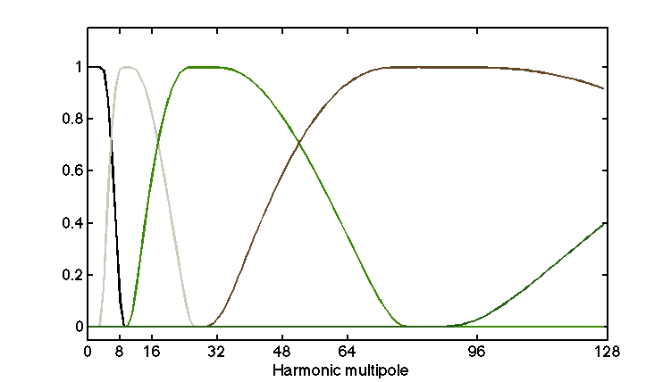
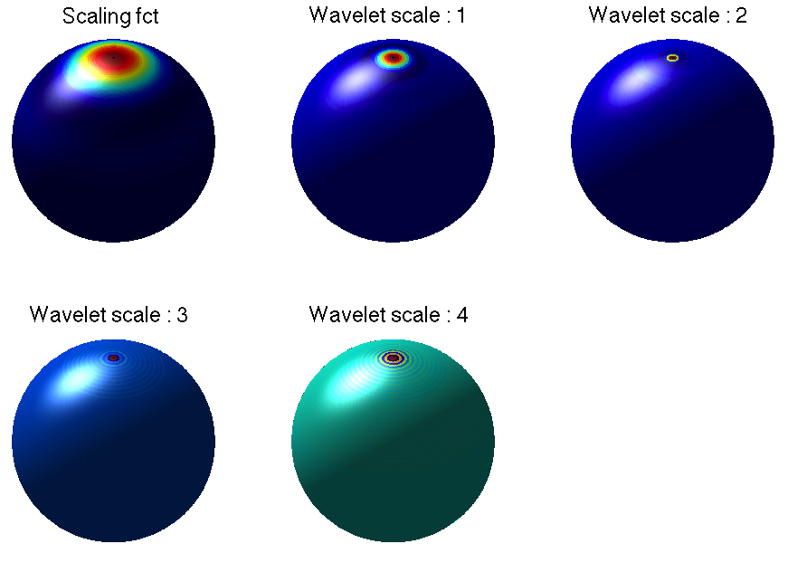

Introduction
The S2LET code (ArXiv paper) provides high performance routines for fast wavelet analysis of signals on the sphere. It uses the SSHT code built on the MW sampling theorem (ArXiv | DOI) to perform exact spherical harmonic transforms on the sphere. The resulting wavelet transform implemented in S2LET is theoretically exact, i.e. a band-limited signal can be recovered from its wavelet coefficients exactly and the wavelet coefficients capture all the information. S2LET also supports the HEALPix sampling scheme, in which case the transforms are not theoretically exact but achieve good numerical accuracy.
In version 1.1 we added support of the Needlets (Marinucci et al 2008, Baldi et al 2006) and B-spline wavelets (Starck et al 2006), in addition to the scale-discretised wavelets (Wiaux et al 2008).
This page outlines the main features of S2LET, installation details as well as the core functionalties and interfaces. References, version, and license information then follows. The S2LET code requires the SSHT and FFTW libraries. The IO FITS features require CFITSIO. To support HEALPix, a valid installation of its Fortran implementation must be provided.
Scale discretised wavelets on the sphere
In S2LET, the scale-discretised wavelets are constructed through an exact tilling of harmonic space, following the scale-discretised approach described in Wiaux et al (2008) (ArXiv | DOI). The harmonic line is tiled into wavelet kernels which are localised (i.e. have compact support) in both real and frequency spaces, as shown on the image below for a particular set of wavelet parameters (B=2, J_min=2, harmonic space on the left, corresponding kernels on the right).
 
With an exact spherical harmonic transform as the one provided in SSHT, the wavelet transform implemented in S2LET is theoretically exact in both pixel and harmonic spaces. In other words one can decompose a band-limited signal in a set of wavelet maps that exactly capture all the information, and reconstruct the initial signal at floating-point precision. Due to the nature of the tiling in harmonic space, the individual wavelet maps have different band-limits and hence can be reconstructed at different resolutions, i.e. with the minimal number of samples. The left and right panels below are the wavelet decomposition of Earth tomography data at full (left) and multi-resolution (right). Due to the exactness of all transforms, these two approaches are equivalent and capture all the information contained in the initial band-limited map.


When using HEALPix instead of the MW sampling on the sphere, the harmonic transform is not exact and hence the corresponding wavelet transform performed by S2LET is only exact in harmonic space. In other words, a set of spherical harmonic coefficients may be projected onto wavelets exactly in harmonic spaces but the HEALPix maps don't capture all the information contained in these coefficients. However good numerical accuracy is achieved in a wide range of situations.
Needlets and B-spline wavelets

In addition to scale-discretised wavelets (Wiaux et al 2008), S2LET supports Needlets (Marinucci et al 2008, Baldi et al 2006) and B-spline wavelets (Starck et al 2006). Please refer to these papers for the S2LET paper for the details of the construction of these wavelets. Importantly, in S2LET they are also constructed through a tilling or a windowing of the harmonic line. The figure on the left illustrates the differences between the three constructions and the resulting support of the axisymmetric wavelets.
In terms of usage, S2LET has a unique interface for the wavelet transform to avoid duplication of high-level routines. The default setting uses scale-discretised wavelets, and the wavelet type can be changed with dedicated functions. Thus one can write programs and pipelines with the high-level routines and decide on the type of wavelets later on.
Installation and documentation
The core functionalities of S2LET are written in C and are self-documenting. The core C library only requires SSHT and FFTW. The extra IO and HEALPix features require the CFITSIO and HEALPix libraries. Interfaces are provided for all high-level routines in Matlab, IDL and Java. In Matlab and IDL, these interfaces allow one to read/write FITS maps (for both the MW and HEALPix formats), compute the spherical harmonic and the wavelet transforms and plot the resulting signals on the sphere. To support HEALPix, S2LET uses a hybrid C/Fortran interface to the Fortran HEALPix library. Several examples, tests and demos are provided fo the C library and all interfaces in Matlab, IDL and Java.
Compiling
The instuctions and options to build the main C library are detailed on this page.
Note that we provide a makefile as well as a Cmake configuration file to facilitate cross-platform compilation.
Instuctions to build and use the Matlab interfaces are detailed here.
Instuctions to build and use the IDL interfaces are detailed here.
Source code documentation
S2LET ships with source and HTML documentation.
- The C documentation is generated by doxygen and available here.
- The Matlab routines that interface with the C implementation are self
documenting, and documentation can be accessed through the help command in
Matlab). HTML documentation is available here and is built with m2html.
- The documentation for IDL interfaces is available here and can be rebuilt in IDL with the function s2let_make_doc. The DOC_LIBRARY routine can also be used to display the documentation while running IDL.
Download
We make the source code of the S2LET package available under the license described below. To receive a copy of S2LET by email please complete the download form, available by clicking the following icon:

Referencing
If you use S2LET for work that results in publication, please reference this site (http://www.s2let.org/) and the related academic paper:
B. Leistedt, J. D. McEwen, P. Vandergheynst and Y. Wiaux, S2LET: A code to perform fast wavelet analysis on the sphere, Astronomy & Astrophysics, in press, 2013 (ArXiv).
If the MW sampling is used please also cite the following paper:
J. D. McEwen and Y. Wiaux, A novel sampling theorem on the sphere, IEEE Trans. Signal Proc., 59, 5876-5887, 2011 (ArXiv | DOI).
Note that the theoretical framework for scale-discretised wavelets is detailed in this work:
Y. Wiaux, J. D. McEwen, P. Vandergheynst, O. Blanc, Exact reconstruction with directional wavelets on the sphere, Mon. Not. Roy. Astron. Soc., 388(2):770-788, 2008. (ArXiv | DOI).
Version
Current version: 1.1b1
Release date: November 2013
Previous versions:
- 1.0b1 - November 2012
License
S2LET package to perform fast wavelet transform on the sphere
Copyright (C) 2012 Boris Leistedt & Jason McEwenThis program is free software; you can redistribute it and/or modify it under the terms of the GNU General Public License as published by the Free Software Foundation; either version 2 of the License, or (at your option) any later version.
This program is distributed in the hope that it will be useful, but WITHOUT ANY WARRANTY; without even the implied warranty of MERCHANTABILITY or FITNESS FOR A PARTICULAR PURPOSE. See the GNU General Public License for more details (LICENSE.txt).
You should have received a copy of the GNU General Public License along with this program; if not, write to the Free Software Foundation, Inc., 51 Franklin Street, Fifth Floor, Boston, MA 02110-1301, USA.
About the authors
S2LET was developed by Boris Leistedt and Jason McEwen at University College London (UCL).
 Boris Leistedt
Boris LeistedtAcademic web page » |
 Dr Jason McEwen
Dr Jason McEwenAcademic web page » |